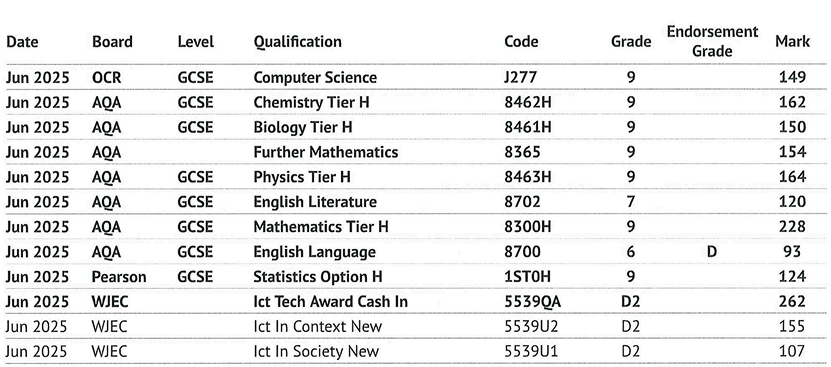

I moved to the UK from Ukraine in Year 9. It was a huge challenge - new country, new language, completely different educational system. Everything I knew about studying and school was suddenly different.
Learning the British system while still remembering the Ukrainian one gave me a unique perspective. I could see what worked in both systems and combine the best approaches. This struggle taught me more about effective learning than anything else.
That's why I created RevisionHub - to help other students who might feel lost or overwhelmed with GCSE revision. I know what it's like, and I know what actually works.

We do not gain much advantage from rereading our notes over and over for an hour. Instead, make your notes and then try to write them again from memory without using any other resources—just you and your brain. This forces your brain to process and retrieve information, helping you remember it better.
For example, reread your notes once, cover them with a sheet of paper, and write everything you can remember. Then check what you missed and repeat until you can write everything down without looking. This helps turn words on paper into knowledge stored in your long-term memory.
Revising everything at once is not as effective as spreading it out over multiple sessions. Try doing 30 minutes of active recall, past paper questions, or revising each day. Revisiting topics multiple times per week, especially just before you start forgetting, makes your memory stronger and more durable.
– the earlier you start the easier it will be for you and your brain to get used to mark schemes and the way questions are structure(little secret there is always a pattern). Doing past papers early in your revision allows you to identify gaps in your knowledge and understand how marks are awarded. It also helps you get used to the format of the questions and the language used in exams, which can reduce anxiety on exam day.
By doing this, you begin to understand how marks are awarded and learn to think like an examiner, focusing on points they are looking for rather than writing long paragraphs that gain no marks.
This is a very effective revision technique, especially at GCSE level. Study a topic briefly, close the book, and write down everything you remember. Then check what you missed and repeat.
While similar to active recall, blurting is more of a learning tool to consolidate new knowledge rather than just revision.
Many students revise topics they are already confident in because it feels easier, but this doesn’t help improve marks. Identify your weaker areas and spend more time on them.
Your weak topics are where most of the marks you are missing lie. Strengthening these areas will give you the biggest improvement in results.
Memory consolidation happens during sleep. Students who sleep 7–9 hours remember significantly more than those who stay up late cramming. Prioritising sleep helps your brain process and store everything you have revised, making your study more effective.